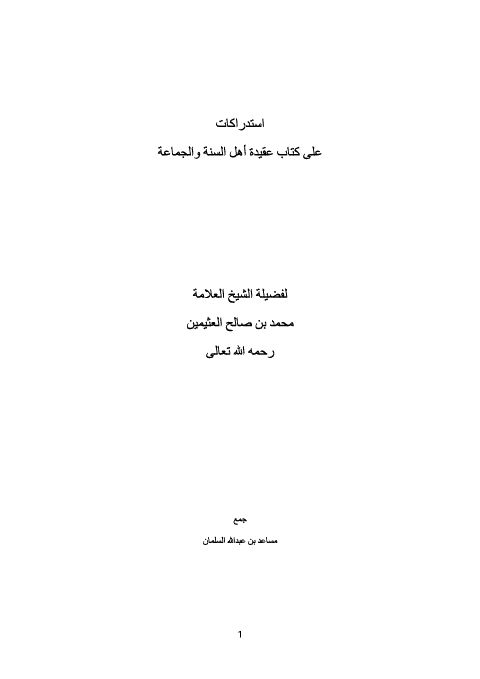
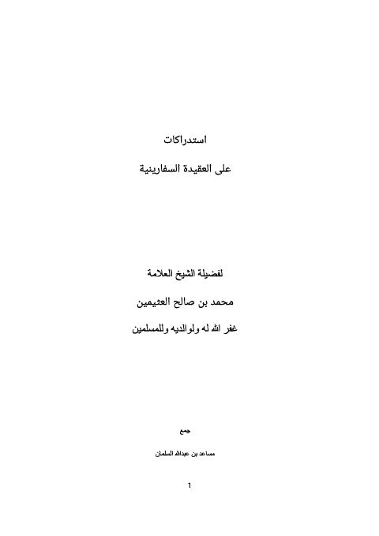
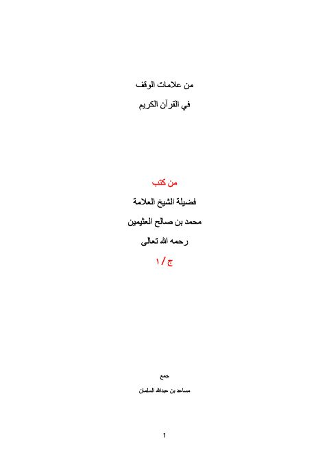
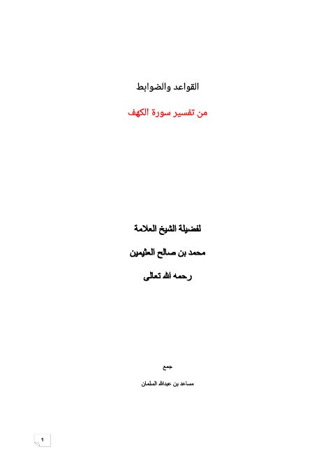
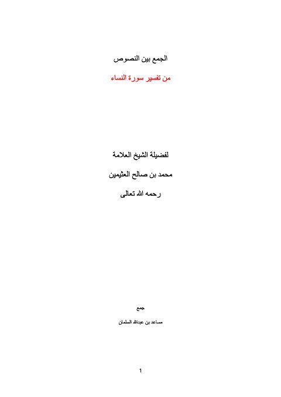
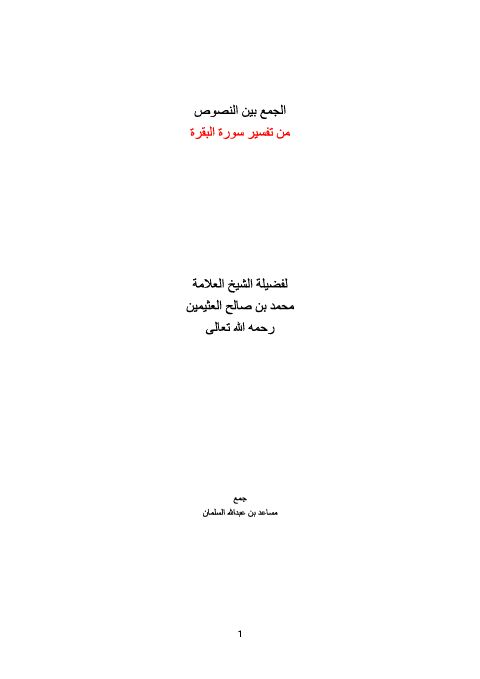
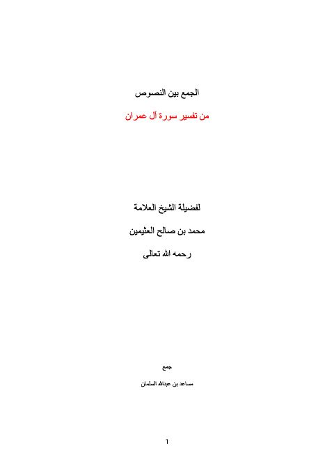
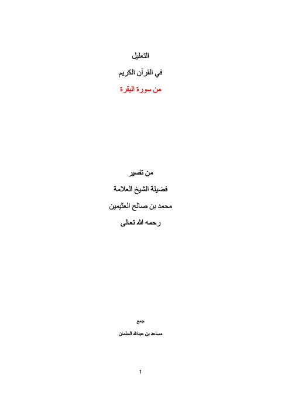
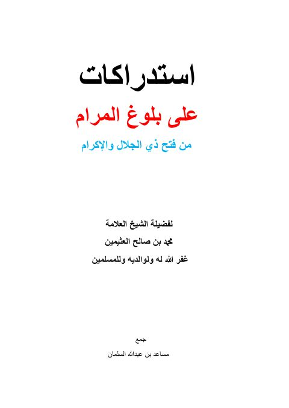

استدراكات على كتاب عقيدة أهل السنة والجماعة استدراكات على كتاب عقيدة أهل السنة والجماعة محمد بن صالح العثيمين
استدراكات على العقيدة السفارينية استدراكات على العقيدة السفارينية محمد بن صالح العثيمين
من علامات الوقف في القرآن الكريم من علامات الوقف في القرآن الكريم محمد بن صالح العثيمين
القواعد والضوابط من تفسير سورة الكهف القواعد والضوابط من تفسير سورة الكهف محمد بن صالح العثيمين
الجمع بين النصوص من تفسير سورة النساء الجمع بين النصوص من تفسير سورة النساء محمد بن صالح العثيمين
الجمع بين النصوص من تفسير سورة البقرة الجمع بين النصوص من تفسير سورة البقرة محمد بن صالح العثيمين
الجمع بين النصوص من تفسير سورة آل عمران الجمع بين النصوص من تفسير سورة آل عمران محمد بن صالح العثيمين
التعليل في القرآن الكريم من سورة البقرة التعليل في القرآن الكريم من سورة البقرة محمد بن صالح العثيمين
استدراكات على بلوغ المرام من فتح ذي الجلال والإكرام استدراكات على بلوغ المرام من فتح ذي الجلال والإكرام محمد بن صالح العثيمين